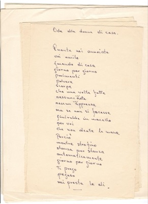
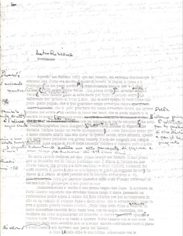
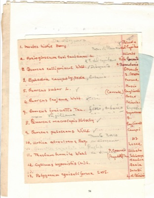

Scritti
Poesia

Ode alla donna di casa
Scritti › Poesia

Rosa arvensis
Scritti › Poesia


Lettera
inviata · ricevuta

Lettera di Dagmar Davidson alla nipote Maria Teresa Rapanà - Campi Salentina, 17.4.1963
Scritti › Lettera · inviata · 3 fogli

Lettera ricevuta da Spizzico - Bari, 19.3.1964
Scritti › Lettera · ricevuta
Diario
Saggistica


Prefazione al libro illustrato La Primavera del Salento (bozza)
Scritti › Saggistica · 6 fogli
Appunti

Nomi dialettali delle piante del Salento
Scritti › Appunti

Nomi scientifici e ubicazioni della flora “Da disegnare”
Scritti › Appunti · 2 fogli